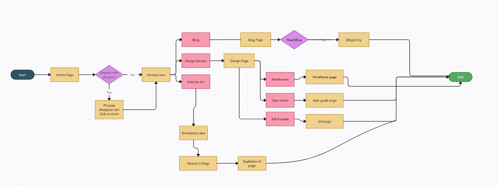

This is the interactive design process of my website.
The goal of "The Beauty Behind Student Chaos" website is to provide a platform for students to view themselves through memes and artwork. The website aims to create a community of students who can share their experiences of the chaos that university and college life brings, and find solace in the relatability of others' experiences.
The content on the website is organized into different sections such as the navigation bar, a blog section, a design section and an Internet art section. Within these sections are sub sections such as the blog section has many blog entries and users are allowed to choose which entry they would like to read. The same thing with the design section, the design section consists of the wireframe page, the style guide page and the IxD page. Users are given the agency to decide which they want view first.
The user flow states the behaviour and decisions carried about by the user of the site
The visual aesthetic of the website "Beauty Behind the Students' Chaos" is vibrant and engaging, with a bold use of bright colours that immediately capture the user's attention. The colourful background and other visual elements throughout the site create a dynamic and lively atmosphere that reflects the youthful and creative energy of the student community. The use of buttons and images further enhances the visual appeal of the site, making it easy for users to navigate and find the information they need. The buttons have a curved design with rounded corners, adding a playful and friendly touch to the overall aesthetic. Images are used throughout the site to reinforce the content and create a more engaging experience for the user. Overall, the visual aesthetic of the site is consistent, with a clear focus on bright colours, playful design elements, and engaging imagery that speaks to the target audience. It creates a fun and inviting atmosphere that encourages users to explore and engage with the content, making it an effective tool for reaching and connecting with students.